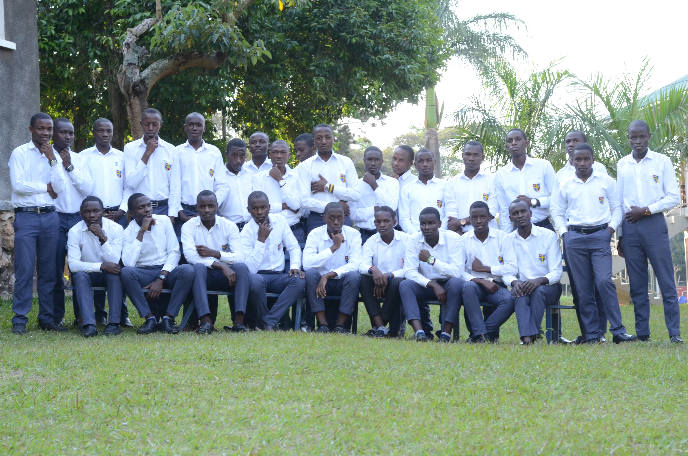
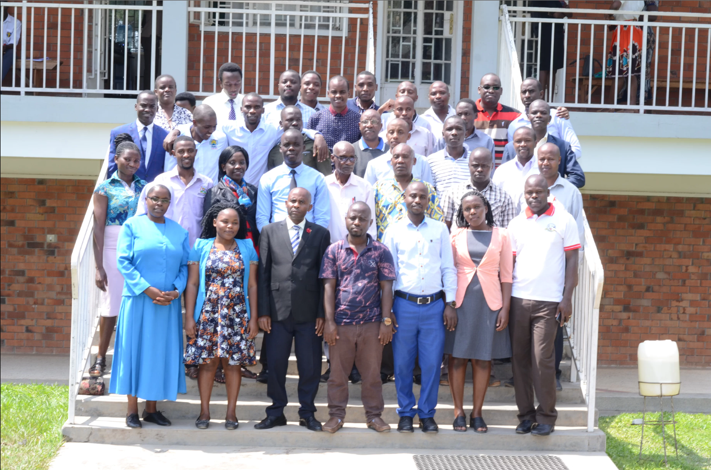
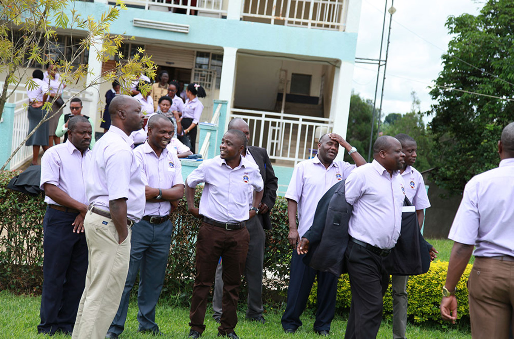

Academics

Welcome to Redeemer High School, where academic excellence is the norm and the foundation of our institution. Since our establishment, we have consistently strived to provide our students with the best possible education and prepare them for a successful future. Our students have access to state-of-the-art facilities and resources that are second to none, including well-equipped classrooms, modern laboratories, a well-stocked library, and the latest technology. We also offer a range of extracurricular activities and programs that allow our students to explore their interests and talents outside the classroom.
REDEEMER - O LEVEL EDUCATION
O level school campus
At Redeemer High School, we are committed to providing a top-quality education to all of our students, including those pursuing Ordinary level studies. Our school prides itself on offering a comprehensive curriculum that is designed to challenge and engage students, while also preparing them for success in their future academic and professional endeavors.
O level Mpanga tea tour
Our Ordinary level program is no exception. We offer a wide range of courses in subjects such as English, Mathematics, Science, Social Studies, and more, all taught by highly qualified and experienced teachers who are dedicated to helping students achieve their full potential. Our curriculum is designed to provide a solid foundation in core subjects, while also allowing students to explore their interests and passions through elective courses.
One of the unique aspects of our Ordinary level program is our commitment to personalized learning. We recognize that every student learns differently, and we work hard to provide individualized support and guidance to help each student succeed. Our teachers are available to provide one-on-one assistance and tutoring, and we also offer a variety of support services, such as study groups and academic counseling, to ensure that students have the resources they need to excel. In addition to our rigorous academic program, we also offer a wide range of extracurricular activities and clubs for students to get involved in. Whether it's sports, music, drama, debate, or community service, there is something for everyone at Redeemer High School. These activities not only provide students with opportunities to develop new skills and interests, but also help to foster a sense of community and belonging. At Redeemer High School, we are proud of the education that we provide to our Ordinary level students. We believe that our commitment to academic excellence, personalized learning, and extracurricular opportunities sets us apart from other schools and prepares our students for success in whatever path they choose to pursue. We invite you to explore our website and learn more about what makes Redeemer High School a special place to learn and grow.
REDEEMER - A LEVEL EDUCATION
At Redeemer High School, we are dedicated to providing an exceptional education to all of our students, including those who are pursuing Advanced level studies. Our Advanced level program is designed to challenge and inspire students, while also preparing them for success in college and beyond. We offer a wide range of Advanced level courses in subjects such as Mathematics, Science, Literature, History, Languages, and more, all taught by experienced and knowledgeable teachers who are passionate about their subjects. Our curriculum is designed to foster critical thinking, analytical skills, and intellectual curiosity, while also providing students with a solid foundation in core subjects.
Our Advanced level program is distinguished by our commitment to personalized learning. We recognize that every student has unique strengths, interests, and learning styles, and we work hard to provide individualized support and guidance to help each student succeed. Our teachers are available to provide one-on-one assistance and tutoring, and we also offer a variety of support services, such as academic counseling and study groups, to ensure that students have the resources they need to excel. At Redeemer High School, we are proud of our Advanced level program and the success that our students have achieved. Our students have gone on to attend some of the most prestigious universities in the world and have pursued successful careers in a variety of fields. We believe that our commitment to academic excellence, personalized learning, and extracurricular opportunities sets us apart from other schools and prepares our students for success in all aspects of their lives. We invite you to explore our website and learn more about what makes Redeemer High School a special place to learn and grow.
In addition to our rigorous academic program, we also offer a wide range of extracurricular activities and clubs for Advanced level students to get involved in. These activities provide opportunities for students to explore their interests and passions, develop leadership skills, and connect with other like-minded individuals.
REDEEMER - TEACHING & CASUAL STAFF
Redeemer High - Teaching Staff
At Redeemer High School, we are proud to have an exceptional team of teachers who are dedicated to providing our students with the highest quality education possible. Our teachers are passionate about their subjects and are committed to helping students achieve their full potential. Our teaching staff is comprised of highly qualified and experienced professionals who bring a wealth of knowledge and expertise to the classroom. Many of our teachers hold advanced degrees in their respective fields and have years of experience teaching at both the high school and college levels.
What sets our teachers apart is their commitment to personalized learning. They recognize that every student has unique strengths, interests, and learning styles, and they work hard to provide individualized support and guidance to help each student succeed. They are available to provide one-on-one assistance and tutoring, and they also offer a variety of support services, such as academic counseling and study groups, to ensure that students have the resources they need to excel.
At Redeemer High School, we are proud of our teaching staff and the dedication, expertise, and passion that they bring to the classroom. We believe that our teachers are the heart and soul of our school, and we are confident that they provide our students with the best possible education and preparation for success in all aspects of their lives. We invite you to explore our website and learn more about the talented and dedicated team of teachers at Redeemer High School.
Our teachers also go above and beyond to create a positive and engaging learning environment for our students. They use a variety of teaching methods and technologies to keep students engaged and motivated, and they are always looking for new and innovative ways to enhance the learning experience. In addition to their teaching responsibilities, many of our teachers also serve as coaches, advisors, and mentors to our students. They are passionate about helping students develop leadership skills, pursue their interests and passions, and prepare for success in college and beyond.
Redeemer High - Support Staff
Redeemer high - Cooks & Cleaners
Redeemer high - Security officers
At Redeemer High School, we believe that the success of our students depends on the efforts of not just our teaching staff, but also our dedicated team of non-teaching staff. From our administrative staff to our maintenance and security personnel, our non-teaching staff plays an integral role in creating a safe, supportive, and engaging learning environment for our students. Our administrative staff is responsible for managing the day-to-day operations of the school, including admissions, student services, finance, and human resources. They work closely with our teaching staff and parents to ensure that our students have the support and resources they need to succeed academically and personally. Our maintenance staff is responsible for maintaining the cleanliness and safety of our school facilities. They work tirelessly to ensure that our classrooms, labs, and common areas are clean, comfortable, and well-maintained. They also handle repairs and maintenance issues promptly and efficiently, ensuring that our students have a safe and secure learning environment. Our security personnel play a critical role in maintaining a safe and secure campus for our students and staff. They monitor our campus, enforce safety protocols, and respond to any potential threats or emergencies. They work closely with our teaching and administrative staff to ensure that our campus is secure and that our students are safe at all times.
In addition to their day-to-day responsibilities, our non-teaching staff also contribute to the overall culture and spirit of our school. They participate in school events, volunteer their time, and go above and beyond to create a positive and supportive atmosphere for our students. At Redeemer High School, we are proud of our dedicated and hardworking team of non-teaching staff. We recognize the essential role they play in creating a safe, supportive, and engaging learning environment for our students. We invite you to explore our website and learn more about the talented and committed individuals who make up our non-teaching staff.